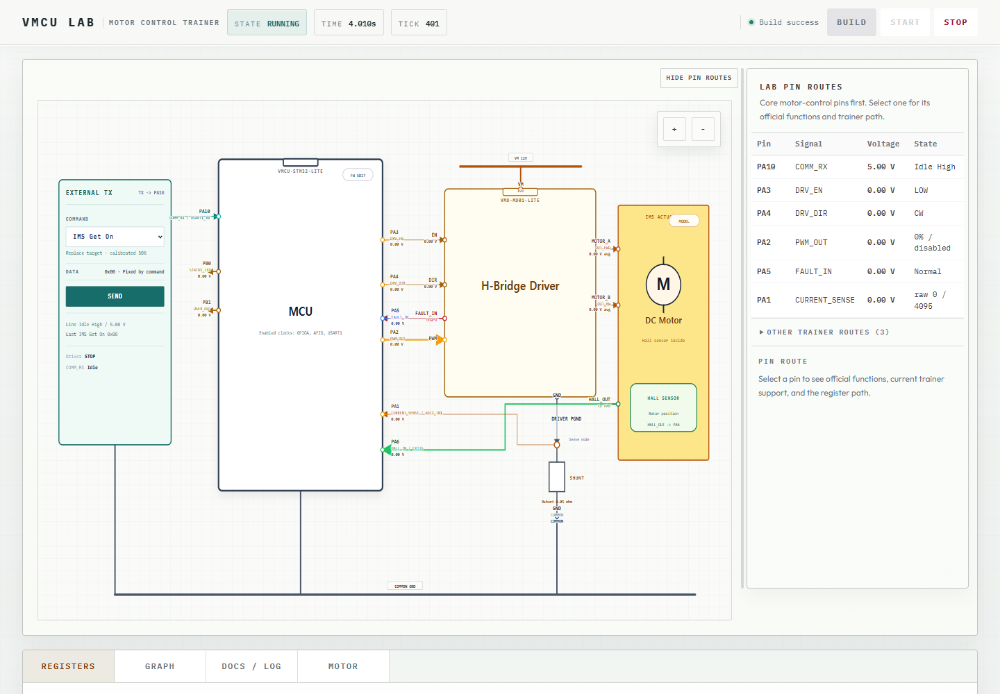
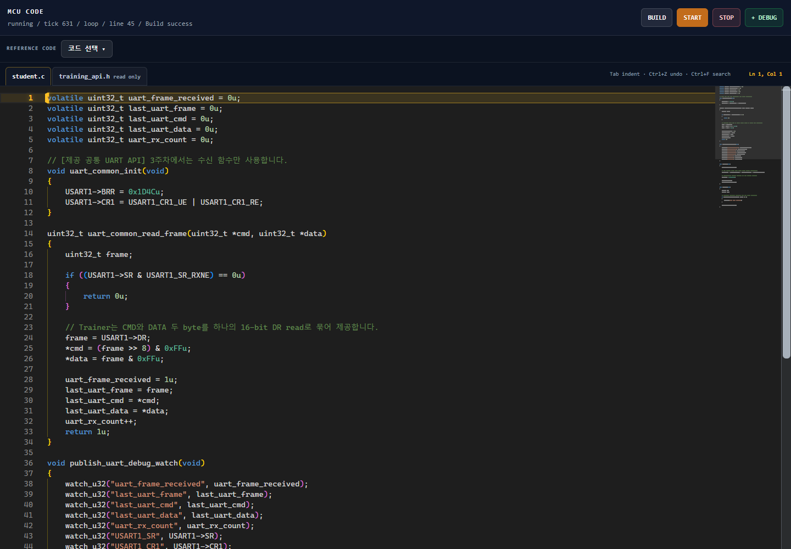

실습 장비 없이 C 코드와 모터 제어 회로의 동작을 살펴보는 브라우저 실습 환경입니다. MCU·H-Bridge·DC 모터의 연결을 보면서 펌웨어를 실행하고 핀과 레지스터 상태를 확인할 수 있습니다.
Virtual MCU Training Environment
서비스 소개
주요 기능
- 펌웨어 편집 — 예제 C 코드·API 확인과 코드 수정
- 실행 조작 — 빌드·실행·정지와 외부 명령 입력
- 회로 관찰 — MCU·드라이버·모터·Hall 센서 연결과 핀 상태 확인
- 신호 확인 — 레지스터·그래프·로그를 통한 설정값과 실행 결과 비교
실제 화면

